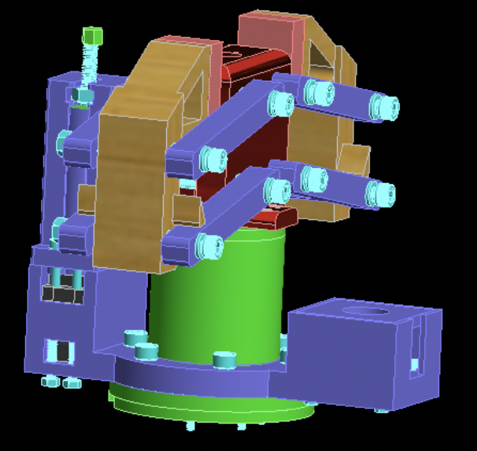
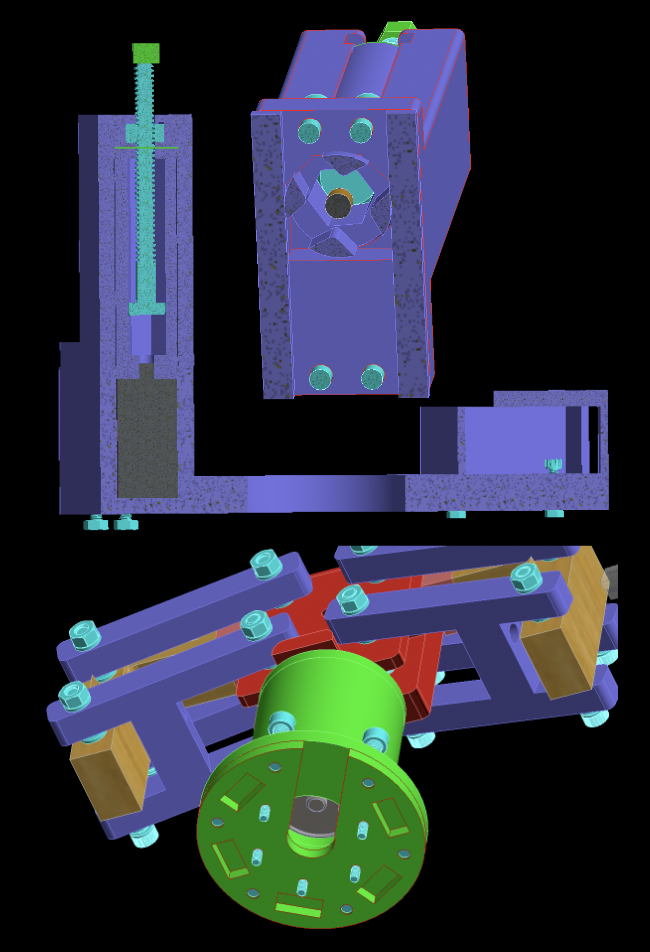
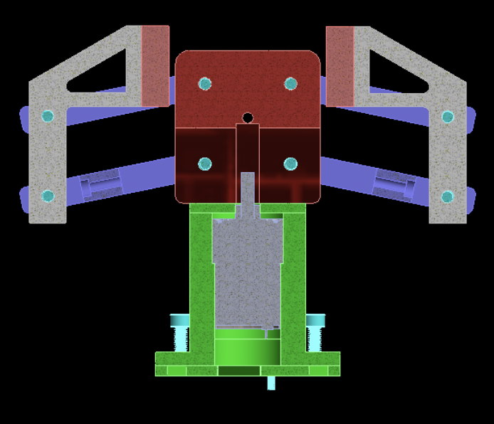

CAD of full-scale end effector

CAD of extra tools (screwdriver, camera, laser)

CAD cross section

Prototype with grippers open
The first prototype of the end effector utilized a 4 linkage system and a DC motor. The end effector also had a camera and self-actuating screwdriver. This screwdriver worked by rotating a bolt through a stationary nut. I manufactured the motor mount using Aluminum 6062 and a mill. Problems encountered with this prototype mostly consisted of too many points of failure in the 3D prints and too much weight, which were addressed in the final design


